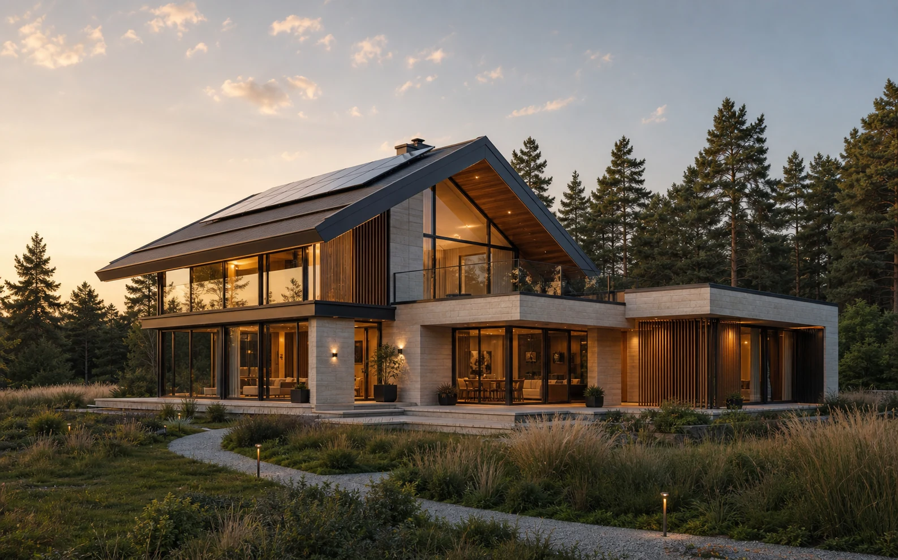
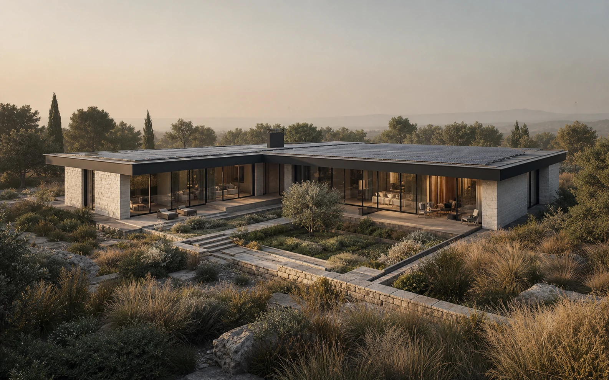
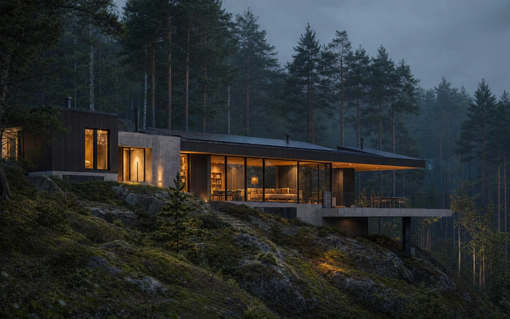

Непрерывный тёплый контур
SIP MgO–PIR–MgO, окна с терморазрывом и герметичный монтаж минимизируют теплопотери.
Архитектурная система нового поколения01 / 08
A-House соединяет архитектуру, автономную энергетику и свободную планировку в одной точной системе. Вы выбираете образ жизни — мы собираем дом вокруг него.


Идея A-House
Дом проектируется не на один этап жизни. Сегодня — открытое пространство для двоих, завтра — приватные комнаты, кабинет или отдельная зона для родителей.
Модульные перегородки, доступная инженерия и ремонтопригодный фасад позволяют дому меняться без тяжёлой реконструкции.
Как устроена система ↘Коллекция домов
Не каталог типовых коробок, а четыре продуманные точки старта. Каждую можно адаптировать к климату, рельефу, масштабу семьи и бюджету.

A.01 / Essential
Компактная конфигурация с панорамным жилым контуром, свободным интерьером и полной инженерной автономией.
Система A-House
Дом сам поддерживает комфорт, производит энергию и сообщает о состоянии систем. Все важные узлы остаются доступными для обслуживания.
SIP MgO–PIR–MgO, окна с терморазрывом и герметичный монтаж минимизируют теплопотери.
Тёплый пол, холодный потолок, рекуперация и контроль влажности работают как единое целое.
Солнечная станция, аккумуляторы, тепловой насос и резервный контур повышают устойчивость дома.
Трассы проходят через техэтаж и подкрышное пространство — к ним можно добраться без демонтажа интерьера.
В основе каждого проекта
Адаптация посадки, фасада и планировки к участку и сценарию семьи.
ARCHМодуль 1220 мм, заводская точность и быстрый контролируемый монтаж.
COREОт климата и водоподготовки до зарядки автомобиля и резервного питания.
TECHРасчёт солнечной станции, накопителей и интеллектуального управления нагрузками.
POWERНавес, дорожки, освещение, дренаж и ландшафт как продолжение дома.
LANDДокументация узлов, маркировка систем и понятный регламент обслуживания.
CARE
Дом и ландшафт
Рельеф, солнце, ветер и виды становятся частью архитектуры. Дом может раскрыться к саду, защитить внутренний двор или шагнуть по склону, сохраняя деревья.
Сначала мы читаем место. Только потом рисуем стены.
Маршрут проекта
Изучаем состав семьи, привычки, участок, бюджет и планы на будущее.
Выбираем основу и создаём архитектурный, планировочный и энергетический сценарий.
Фиксируем конструктив, инженерию, материалы, узлы и контроль качества.
Производим модули, готовим участок, собираем и запускаем системы дома.
Коротко о важном
Да. Готовая конфигурация — это проверенная основа. Мы адаптируем планировку, фасад, ориентацию, инженерный состав и связь с участком.
Уровень автономности рассчитывается для конкретного климата и сценария потребления. Солнечная станция, накопители и резервные источники подбираются как единая система.
Ключевые трассы и оборудование доступны для диагностики и замены. Скрытые необслуживаемые узлы принципиально не используются.
Да. Тип фундамента, посадка и конфигурация дома уточняются после геологии, топосъёмки и анализа рельефа.
Расскажите о будущем доме. Мы предложим подходящую конфигурацию и обозначим первые шаги проекта.